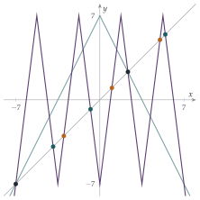

STEP III 2025、第2問
先に進む前に問題を読んでおこう。問題は、OCRが配布している2025年のSTEP問題一式（zipファイル）のSTEP IIIに収録されている： www.ocr.org.uk/Images/750486-2025-past-papers.zip
導入
1975年、リー（Tien-Yien Li）とヨーク（James Yorke）は『American Mathematical Monthly』に、数学史上もっとも有名な題名の一つをもつ論文を発表した。その題名は「Period three implies chaos」（周期 3 はカオスを導く）である。彼らは、区間からそれ自身への連続関数（continuous function）が周期（period）\(3\) の点（ちょうど 3 ステップ後に初めて元に戻る初期値）をもつならば、その関数はあらゆる周期の点をもつことを証明した。\(1\)、\(2\)、\(4\)、\(5\)、\(17\)、\(1000\)、そのすべてである。この論文はまた、「カオス（chaos）」という言葉を数学に持ち込んだ。
2025年に出題されたこの問題は、この定理を実際に手を動かしてたどる旅である。関数 \(\mathrm{f}(x) = 7 - 2|x|\) は 2 本の直線からできているので、すべてを正確に計算できる。その \(2\)-サイクル（2-cycle）と \(3\)-サイクルを求め、その過程で、一つのサイクルの存在がなぜ残りのサイクルの存在を強制するのかが見えてくる。
取りかかる前に
\(y = 7 - 2|x|\) のグラフはどのような形か。直線 \(y = x\) とどこで交わるか。区間（interval）\([-7, 7]\) をどこへ写すか。
グラフは頂点が \((0, 7)\) にある逆 V 字形で、傾きは \(\pm2\) である。\(y = x\) とは、\(x = 7 - 2x\)（ただし \(x \geq 0\)）のとき、すなわち \(x = \frac73\) で交わり、また \(x = 7 + 2x\)（ただし \(x < 0\)）のとき、すなわち \(x = -7\) で交わる。これらが不動点（fixed point）である。そこから始めると、数列はまったく動かない。また \(\mathrm{f}(-7) = \mathrm{f}(7) = -7\)、\(\mathrm{f}(0) = 7\) であるから、\(\mathrm{f}\) は \([-7, 7]\) をそれ自身の上へ写す。区間を 2 倍の長さに引き伸ばし、半分に折りたたむのである。
順を追って解く
段階 1 \(\mathrm{f}\circ\mathrm{f}\) のグラフ
\(x\) が \(-7\) から \(7\) まで動くとき、\(\mathrm{f}(x)\) は \(-7\) から \(7\) まで増加し、再び \(-7\) まで減少する。では \(\mathrm{f}(\mathrm{f}(x))\) はどうなるか。
\(x\) が \(-7\) から \(0\) まで動くとき、\(\mathrm{f}(x)\) は \([-7, 7]\) 全体を動くので、\(\mathrm{f}(\mathrm{f}(x))\) は V 字をまるごと 1 つ描く。すなわち \(-7\) から \(7\) まで上がり、再び下がる。\(x\) が \(0\) から \(7\) まで動くときも同じことが起こる。したがって \([-7, 7]\) 上で \(\mathrm{f}\circ\mathrm{f}\) のグラフは上下逆の W 字形になる。傾き \(\pm4\) の 4 本の線分からなり、どれも高さ \(-7\) と \(7\) の間を結び、\(x = \pm\frac72\)（\(\mathrm{f}(x) = 0\) となる点）で山、\(x = 0\) で \(-7\) までの谷をもつ（図 8.8.1）。\([-7, 7]\) の外では、どちらのグラフも急激に下がっていく。
段階 2 \(\mathrm{f}(\mathrm{f}(x)) = x\) を解く
4 本の線分はそれぞれ対角線 \(y = x\) とちょうど 1 回ずつ交わる。そのうち 2 つの交点はすでにわかっている。なぜか。入れ子になった絶対値を展開せずに、残りの 2 つを求めるにはどうすればよいか。
不動点 \(\frac73\) と \(-7\) は当然 \(\mathrm{f}(\mathrm{f}(x)) = x\) を満たす。それ以外の解 \(p\) は、\(q = \mathrm{f}(p) \neq p\) として \(2\)-サイクル \(p \to q \to p\) に属する。符号で場合分けしてみよう。\(p\) と \(q\) がともに正ならば \(q = 7 - 2p\)、\(p = 7 - 2q\) であり、これから \(p = q = \frac73\) となってしまう。ともに負ならば、同じ議論で \(-7\) となる。したがって一方は正、他方は負であり、\(p > 0 > q\) としてよい。このとき \[q = 7 - 2p, \qquad p = 7 + 2q.\] よって \(p = 7 + 14 - 4p\) より \(p = \frac{21}{5}\)、\(q = -\frac75\) であり、確かに \(q < 0\) を満たす。
\([-7, 7]\) の外には解はない。実際、\(x > 7\) のとき \(\mathrm{f}(\mathrm{f}(x)) = 21 - 4x < x\) であり、\(x < -7\) のとき \(\mathrm{f}(\mathrm{f}(x)) = 21 + 4x < x\) である。したがって 4 つの解は \[x = -7, \quad -\tfrac75, \quad \tfrac73, \quad \tfrac{21}{5}. \qed\] である。数列がちょうど周期 \(2\) をもつのは、\(a = \frac{21}{5}\) または \(a = -\frac75\) のときである。（不動点では数列は定数であり、周期は \(1\) である。）
段階 3 遅れてサイクルに到着する
\(a = \frac{28}{5}\) とすると、\(u_1 = 7 - \frac{56}{5} = -\frac{21}{5}\)、\(u_2 = 7 - \frac{42}{5} = -\frac75\)、\(u_3 = 7 - \frac{14}{5} = \frac{21}{5}\)、\(u_4 = -\frac75\)、以下同様である。\(u_2\) 以降の数列は \(2\)-サイクルであるが、\(u_0 = \frac{28}{5}\) と \(u_1 = -\frac{21}{5}\) はサイクルに含まれない。■
\(\frac{28}{5}\) を自分で見つけるにはどうすればよかったか。逆向きに考えてみよう。\(\mathrm{f}\) によって \(-\frac75\) に写される数はどれか。
\(\mathrm{f}(x) = -\frac75\) は \(|x| = \frac{21}{5}\) を意味するので、\(x = \pm\frac{21}{5}\) である。一方はサイクルに含まれ、もう一方の \(-\frac{21}{5}\) がサイクルへの入口となる。次に \(\mathrm{f}(x) = -\frac{21}{5}\) は \(|x| = \frac{28}{5}\) を意味する。\(\mathrm{f}\) は 2 対 1 の写像なので、\((-7, 7)\) のすべての点は 2 つの逆像（preimage）をもち、したがってどのサイクルにも、そこへ流れ込む初期値の木が付随している。
段階 4 \(3\)-サイクル
\(a = 1\) と \(a = -\frac79\) から始まる数列を計算せよ。
\(a = 1\) からは \(1 \to 5 \to -3 \to 1\) となる。\(a = -\frac79\) からは \(-\frac79 \to \frac{49}{9} \to -\frac{35}{9} \to -\frac79\) となる。どちらも \(3\)-サイクルである。
\(\mathrm{f}(\mathrm{f}(\mathrm{f}(x))) = x\) は解をいくつもちうるか。段階 1 と同様に、そのグラフの形を考えよ。
段階 1 の議論を繰り返すと、\(\mathrm{f}\) をもう一度適用するたびに線分の本数は 2 倍になる。したがって \([-7, 7]\) 上で \(\mathrm{f}\circ\mathrm{f}\circ\mathrm{f}\) のグラフは、傾き \(\pm8\) の 8 本の線分からなるジグザグであり、どの線分も \(-7\) から \(7\) までの高さ全体にわたる（図 8.8.2）。各線分は対角線とちょうど 1 回交わるので、\([-7, 7]\) にはちょうど 8 個の解があり、（前と同様に）その外には解はない。すでに 8 個、すなわち 2 つの不動点と 2 つの \(3\)-サイクルの 6 点が見つかっている。よって解は \[x = -7,\ \tfrac73,\ 1,\ 5,\ -3,\ -\tfrac79,\ \tfrac{49}{9},\ -\tfrac{35}{9}. \qed\] である。
段階 5 \(3\)-サイクルへの遅れた到着
サイクル \(1 \to 5 \to -3\) から逆向きにたどる。\(u_3\) はサイクルに含まれるが \(u_2\) は含まれないようにしたい。\(1\) の逆像は \(|x| = 3\) を満たすので \(x = \pm3\) であり、\(-3\) はサイクルに含まれるから \(u_2 = 3\) とする。\(3\) の逆像は \(|x| = 2\) を満たすので、\(u_1 = 2\) とする。\(2\) の逆像は \(|x| = \frac52\) を満たすので、\(u_0 = \frac52\) とする。すると \[\tfrac52 \to 2 \to 3 \to 1 \to 5 \to -3 \to 1 \to \cdots,\] となり、\(\frac52\)、\(2\)、\(3\) のいずれもサイクルに含まれない。よって \(a = \frac52\) が条件を満たす。■


振り返り
形で数える。 入れ子になった絶対値を展開する代わりに、グラフの線分の本数を数えた。これによって探すべき解の個数がわかり、したがってすべて見つけ終えたときにそれがわかった。
サイクルの構造を利用する。 \(\mathrm{f}(\mathrm{f}(x)) = x\) の解は不動点か、2 つ組で現れる。\(\mathrm{f}(\mathrm{f}(\mathrm{f}(x))) = x\) の解は不動点か、3 つ組で現れる。
逆向きに考える。 (i)(d) と (ii)(c) の「遅れた到着」は逆像によって構成した。
背後にある数学
あらゆる長さのサイクル
段階 4 の数え方は、何ステップの場合にも通用する。\(\mathrm{f}\) を \(n\) 回適用したものを \(\mathrm{f}^n\) と書く。\([-7, 7]\) 上で \(\mathrm{f}^n\) のグラフは、高さ全体にわたる \(2^n\) 本の線分からなるので、\(\mathrm{f}^n(x) = x\) はちょうど \(2^n\) 個の解をもつ。そのうちいくつかは \(n\) を割り切るより短い周期 \(d\) をもつが、各 \(d\) についてそれらは高々 \(2^d\) 個であり、 \[2^n > 2^{n/2} + 2^{n/3} + \cdots + 2^1 \quad\text{（$n$ の約数 $d < n$ についての和）}\] が成り立つ。なぜなら、\(n\) より小さい約数はすべて \(n/2\) 以下であり、\(2^1 + 2^2 + \cdots + 2^{\lfloor n/2\rfloor} < 2^{\lfloor n/2\rfloor + 1} \leq 2^n\) だからである。したがって、すべての \(n\) について周期がちょうど \(n\) である点が存在する。この関数はあらゆる長さのサイクルをもつ。
なぜ周期 3 がすべてを強制するのか
リーとヨークの定理によれば、これは私たちの関数に特有のことではない。区間からそれ自身への連続関数 \(\mathrm{g}\) が \(3\)-サイクルをもてば、どのようなものであっても、あらゆる長さのサイクルをもつ。証明には中間値の定理（intermediate value theorem）しか使わない。そして私たちの \(3\)-サイクルが、その筋道を示してくれる。
サイクル \(1 \to 5 \to -3\) の点の間にある 2 つの区間を \(I_1 = [-3, 1]\)、\(I_2 = [1, 5]\) とする。\(\mathrm{f}\) はそれぞれをどこへ写すか。
\(I_2\) 上で \(\mathrm{f}\) は \(\mathrm{f}(1) = 5\) から \(\mathrm{f}(5) = -3\) まで減少するので、\(\mathrm{f}(I_2) = [-3, 5] = I_1 \cup I_2\) である。\(I_1\) 上で \(\mathrm{f}\) は \(\mathrm{f}(-3) = 1\) から \(\mathrm{f}(0) = 7\) まで増加し、\(\mathrm{f}(1) = 5\) まで減少するので、\(\mathrm{f}(I_1) = [1, 7]\) であり、これは \(I_2\) を含む。使ったのはサイクルの 3 点だけであることに注意しよう。\(a < b < c\) である \(3\)-サイクル \(a \to b \to c\) をもつ連続関数はどれも、同じように区間を覆う。どの区間がどの区間を覆うかを図にまとめることができる（図 8.8.3）： \[I_1 \to I_2, \qquad I_2 \to I_1, \qquad I_2 \to I_2.\] 定理は次の 2 つの事実から従う。どちらも中間値の定理の帰結である。
\(\mathrm{g}(I) \supseteq I\) ならば、\(\mathrm{g}\) は \(I\) 内に不動点をもつ。（\(\mathrm{g}(x) - x\) に中間値の定理を適用すればよい。）
\(\mathrm{g}(I) \supseteq J\) ならば、\(\mathrm{g}(I') = J\) をちょうど満たす、より小さい閉区間 \(I' \subseteq I\) が存在する。
周期 \(n\) の点を見つけるには、図の中でループ \(I_2 \to I_2 \to \cdots \to I_2 \to I_1 \to I_2\) をたどる。\(I_2\) の中で \(n - 1\) ステップ進み、1 ステップだけ \(I_1\) に出て戻ってくるのである。2 つ目の事実を繰り返し使うと、\(I_2\) を縮めて、軌道がこの遍歴（itinerary）に従う初期値の区間を得ることができ、\(\mathrm{g}^n\) はその区間を \(I_2\) 全体の上へ写す。1 つ目の事実から、\(\mathrm{g}^n(x) = x\) を満たし、ステップ \(n - 1\) でのみ \(I_1\) を訪れる点 \(x\) が得られる。その周期は \(n\) より小さくはなりえない。もしそうなら、\(I_1\) への訪問がもっと早く繰り返されるはずだからである。（\(I_1\) と \(I_2\) は点 \(1\) を共有しているので、一つだけ微妙な点がある。それが問題を起こさないことの確認は演習とする。）

リーとヨークが最初だったわけではない。1964年、ウクライナの数学者シャルコフスキー（Oleksandr Sharkovskii）は、はるかに完全な結果をすでに証明していた。それはロシア語で『Ukrainian Mathematical Journal』に発表され、西側では 10 年間知られていなかった。正の整数を次のように並べる。 \[3,\ 5,\ 7,\ 9,\ \ldots,\ \ 2\cdot3,\ 2\cdot5,\ \ldots,\ \ 2^2\cdot3,\ 2^2\cdot5,\ \ldots,\ \ \ldots,\ \ 2^3,\ 2^2,\ 2,\ 1:\] まず \(3\) 以上の奇数、次に奇数の 2 倍、次に奇数の 4 倍、以下同様に続き、最後に \(2\) の累乗を減少する順に並べる。シャルコフスキーの定理によれば、区間上の連続関数が長さ \(m\) のサイクルをもてば、この並びで \(m\) より後にくるすべての長さのサイクルをもつ。\(3\) が先頭にあるので、周期 \(3\) はあらゆる周期を導く。しかもこの定理は最良である。すなわち、どの \(m\) についても、長さ \(m\) のサイクルをもち、並びでそれより前にくる長さのサイクルをもたない関数が存在する。末尾の \(2\) の累乗は、第 8.7 節 のロジスティック写像における周期倍分岐のカスケード（period-doubling cascade）そのものであり、\(3\)-サイクルはそこで \(k = 1 + \sqrt8\) において現れる。
テント写像とロジスティック写像
\([0, 1]\) を \([-7, 7]\) の上へ写す置換 \(x = 14y - 7\) を行う。簡単な計算により、\(\mathrm{f}\) はテント写像（tent map） \[T(y) = \begin{cases} 2y & 0 \leq y \leq \tfrac12, \\ 2 - 2y & \tfrac12 \leq y \leq 1, \end{cases}\] になることがわかる。さらに置換 \(u = \sin^2(\pi y / 2)\) を行うと、テント写像はロジスティック写像（logistic map）\(u \mapsto 4u(1 - u)\) に変わる。つまりこの問題の関数は、第 8.7 節 のカオス的なロジスティック写像をまっすぐに伸ばしたものである。\(\mathrm{f}^3(x) = x\) の 8 個の解は、\([0, \frac{\pi}{2}]\) における \(\sin^2(8\theta) = \sin^2\theta\) の 8 個の解に対応する。
思考のスキル
解が存在することを示すのに、いつもそれを見つける必要があるわけではない。連続関数の符号が変わること、あるいはある区間がそれ自身を覆うように写されることを示せばよい。
この問題では、すべての解を計算することができた。しかしリーとヨークの定理は、まったく計算できない関数にも適用でき、中間値の定理と、どの区間がどの区間を覆うかを表す図だけを使って、無限個のサイクルの存在を証明する。大学では、このような構成を伴わない存在証明という議論のスタイルが、解析学（中間値の定理そのもの）、位相幾何学（不動点定理）、そして力学系の至るところに現れる。
次の一歩
\(4\)-サイクル。 被覆図を使って、\(\mathrm{f}\) の \(4\)-サイクルがどこにあるはずかを予想せよ（\(I_2\) で 3 ステップ、\(I_1\) で 1 ステップ）。次にそれを正確に求めよ。（ヒント：このサイクルは 3 つの正の点と 1 つの負の点をもつ。4 つの一次方程式を書き下せ。）
微妙な点。 周期 \(3\) が周期 \(n\) を導くことの証明において、\(n \geq 4\) のとき、得られた点 \(x\) が点 \(1\)（あるいは元の \(3\)-サイクルのどの点）にもなりえない理由を説明せよ。
周期 \(3\) なしの周期 \(5\)。 \(\mathrm{g}(1) = 3\)、\(\mathrm{g}(3) = 4\)、\(\mathrm{g}(4) = 2\)、\(\mathrm{g}(2) = 5\)、\(\mathrm{g}(5) = 1\) を満たし、これらの点を直線で結んだ \([1, 5]\) 上の連続関数のグラフをかけ。区間 \([1, 2]\)、\([2, 3]\)、\([3, 4]\)、\([4, 5]\) についてその被覆図をかけ。長さ \(3\) のループは見つかるか。（シャルコフスキーの定理によれば、\(3\)-サイクルは存在しない。）
テント写像。 \(x = 14y - 7\) によって \(\mathrm{f}\) がテント写像になることを確かめよ。次に、テント写像は \(y\) を 2 進法で書いたものを 2 倍し、先頭の桁が \(1\) のときはすべての桁を反転させることを示し、これを用いてその \(3\)-サイクルを求めよ。
さらに学ぶために
Tien-Yien Li & James Yorke, “Period three implies chaos”, American Mathematical Monthly 82 (1975). 短く、中間値の定理を知っていれば読める。
Robert Devaney, A First Course in Chaotic Dynamical Systems (CRC Press). 学部生向けに書かれており、テント写像、ロジスティック写像、シャルコフスキーの定理を完全な証明つきで扱っている。
Keith Burns & Boris Hasselblatt, “The Sharkovsky theorem: a natural direct proof”, American Mathematical Monthly 118 (2011). 被覆図を用いた現代的な証明。